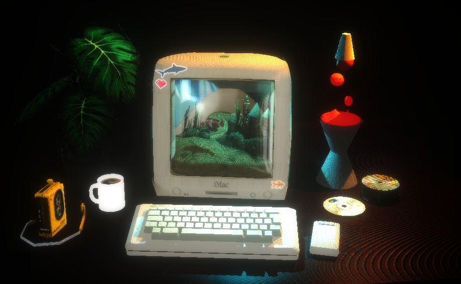
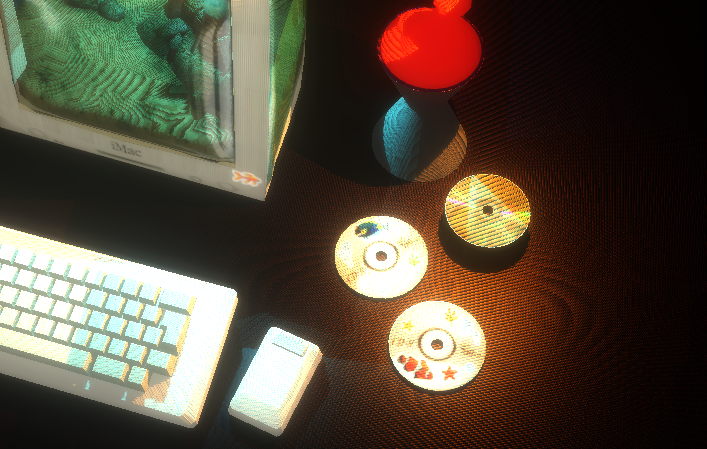
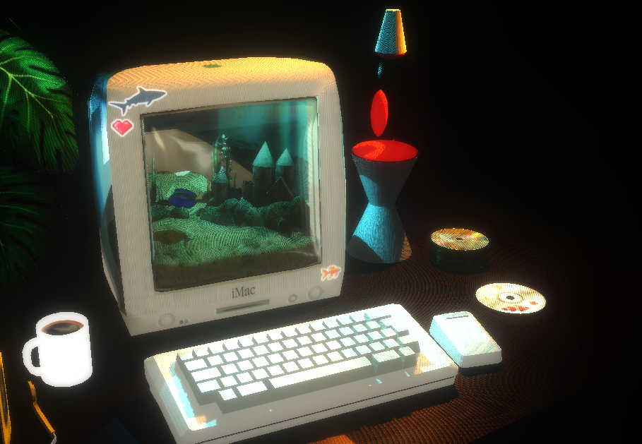

Scena 3D interattiva sviluppata in Three.js
L'applicazione interattiva "iMac Aquarium", interamente sviluppata in Three.js, prende ispirazione dall'estetica tecnologica degli anni '90 per creare una piccola esperienza musicale e visivamente coinvolgente.

La scena rappresenta un iMac G3 trasformato in acquario, accompagnato su una scrivania da diversi oggetti decorativi come una lava lamp animata, una pila di CD, una tazza di caffè, un walkman ed una pianta ornamentale. L'utente può interagire con la scena trascinando due CD decorati all'interno del computer per attivare differenti pesci virtuali e contenuti audio associati.

Il progetto è stato realizzato partendo da un modello 3D dell'iMac G3 scaricato da SketchFab, che è stato poi modificato in Blender per adattarlo alle esigenze del progetto: sono stati aggiunti i modelli dei pesci, della lava lamp e degli altri oggetti decorativi. La scena è illuminata da due fonti distinte di luce: una luce puntiforme di colore azzurro centrata nel modello dell'iMac ed una luce puntiforme arancione posizionata all'interno della lava lamp. Lo shader Unreal Bloom è stato applicato alla scena per esaltare gli effetti di luce e creare un'atmosfera più suggestiva, in linea con l'estetica del progetto.

L'intera ambientazione viene caricata da un file GLTF contenente sia gli elementi statici sia gli oggetti interattivi mediante GLTFLoader.
Durante il caricamento vengono identificati e memorizzati i principali componenti della scena:
Le dimensioni dell'acquario vengono ricavate automaticamente dal bounding box della mesh dell'acqua presente nel modello, permettendo di definire in modo dinamico l'area di nuoto dei pesci senza utilizzare coordinate fissate manualmente.
Ogni pesce ha il proprio oggetto FishState che ne incapsula lo stato completo:
posizione, direzione, angolo sull'ellisse, mixer, audio e target del click.
Il comportamento di nuoto è implementato nella funzione updateFish:
ARRIVE_DIST), il pesce rimane fermo per un tempo configurabile (pauseDuration) per
poi riprendere il nuoto libero.
Il percorso ellittico è definito in forma parametrica. La componente verticale utilizza una funzione sinusoidale con frequenza più alta rispetto alla componente orizzontale per creare
un movimento più naturale
fs.pos.set(
tank.centerX + Math.cos(angle) * tank.radiusX,
tank.centerY + Math.sin(angle * 1.8) * 0.025,
tank.centerZ + Math.sin(angle) * tank.radiusZ
)
Le variazioni di direzione vengono smussate con un'interpolazione lineare sul vettore direzione (Vector3.lerp), evitando rotazioni istantanee e conferendo al
pesce un movimento più naturale.
Al termine della sosta, l'angolo dell'ellisse viene risincronizzato con la posizione corrente tramite Math.atan2, evitando discontinuità nella traiettoria al
momento del ripristino del nuoto libero.
Le mesh dei pesci esportate da Blender presentano una rotazione nativa di +90° sull'asse X, dovuta alla differenza tra il sistema di coordinate di Blender (Z up) e quello di Three.js (Y up).
Per correggere questa rotazione, viene applicata una rotazione iniziale di -90° sull'asse X utilizzando un quaternione Q_NATIVE, che viene combinato con il quaternione di
orientamento Q_YAW attorno all'asse Y del mondo per allineare correttamente i pesci alla direzione di movimento
const Q_NATIVE = new THREE.Quaternion().setFromAxisAngle(new THREE.Vector3(1, 0, 0), Math.PI / 2) const Q_YAW = new THREE.Quaternion() const WORLD_Y = new THREE.Vector3(0, 1, 0) Q_YAW.setFromAxisAngle(WORLD_Y, Math.atan2(fs.dir.x, fs.dir.z) + fs.noseOffsetY) fs.group.quaternion.multiplyQuaternions(Q_YAW, Q_NATIVE)
La variabile noseOffsetY corregge il disallineamento tra l'inclinazione della mesh e la direzione del moto ed è specifica per ogni modello.
Sia i modelli dei pesci che quello della lava lamp sono stati importati in Blender completi di animazioni scheletriche. In Three.js, ogni pesce ha un AnimationMixer
dedicato che gestisce la riproduzione dell'animazione di nuoto, attivata quando il pesce viene inserito nell'iMac.
for (const key of ['clown', 'blue']) {
fishStates[key].mixer = new THREE.AnimationMixer(root)
gltf.animations.forEach(clip => {
fishStates[key].mixer
.clipAction(clip)
.setLoop(THREE.LoopRepeat, Infinity)
.play()
})
}
Entrambi i mixer vengono aggiornati ad ogni frame, anche quando il pesce corrispondente non è attivo, in modo che quando viene inserito un CD l'animazione risulta essere già in corso.
L'interazione con la scena è basata su eventi di drag-and-drop e click, gestiti tramite Raycaster per identificare gli oggetti interagiti.
I CD possono essere trascinati e rilasciati all'interno dell'iMac per attivare i pesci corrispondenti, mentre cliccando sulla tastiera si espelle il pesce attivo e cliccando sul mouse si accende/spegne la luce dell'acquario.
Il progetto implementa un listener mousedown manuale per i click sugli oggetti statici e DragControls di Three.js per il trascinamento dei CD. Per ruotare la camera e visualizzare la scena invece
vengono utilizzati gli OrbitControls, che sono disabilitati durante il drag dei CD per evitare conflitti di input. Un listener mousemove aggiorna continuamente le coordinate NDC del pointer per il
raycasting nel dragend.
Quando un CD viene droppato sull'iMac, insertFish() nasconde il CD, rende visibile il gruppo pesce, ne inizializza lo stato di nuoto e avvia la traccia audio. L'operazione inversa, ejectFish(),
nasconde il pesce, interrompe l'audio e riporta il CD alla posizione e al quaternione iniziali salvati al caricamento.
La scena utilizza tre sorgenti luminose per creare un'atmosfera intima e suggestiva:
Alla luce dell'acquario è stato aggiunto un lieve flicker, ovvero un tremolio per simulare la rifrazione dell'acqua calcolato come la somma di due sinusoidi ad alta frequenza:
aquaLight.intensity = aquaLightOn
? aquaBaseIntensity + Math.sin(t * 5.1) * 0.3
+ Math.sin(t * 2.7) * 0.15
: 0
Per esaltare gli effetti di luce e creare un'atmosfera più suggestiva, è stato applicato alla scena lo shader Unreal Bloom, che amplifica le aree luminose creando un alone luminoso intorno ad esse. Questo effetto è particolarmente evidente intorno alla luce dell'acquario e su tastiera e mouse, contribuendo a ricreare un'atmosfera acquatica.